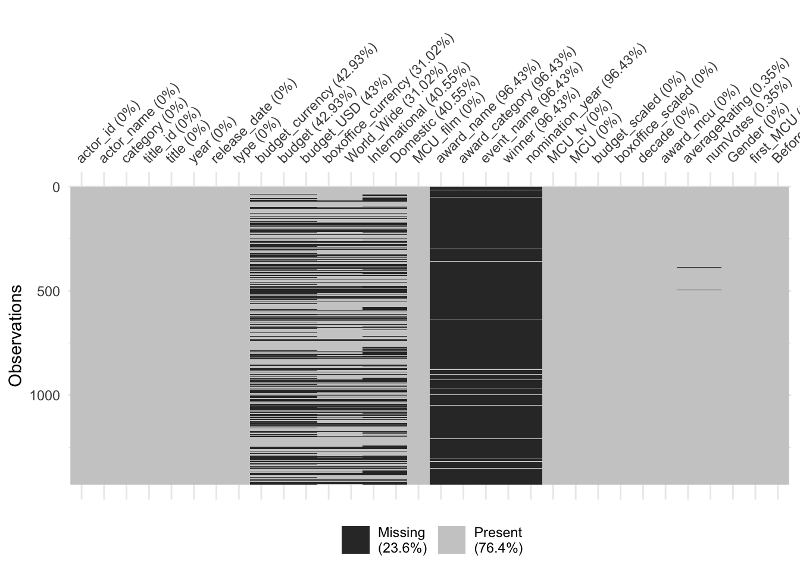
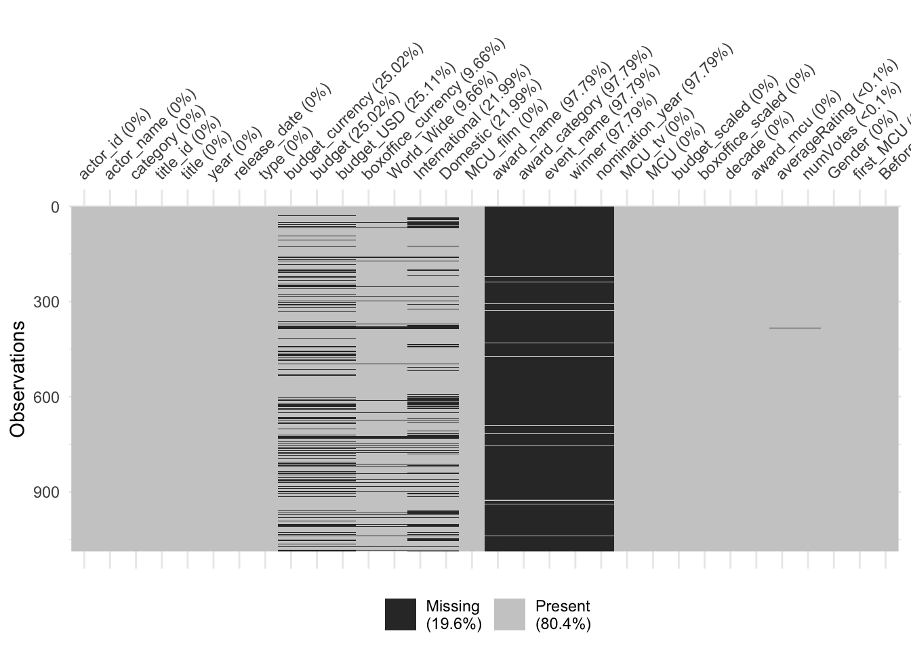
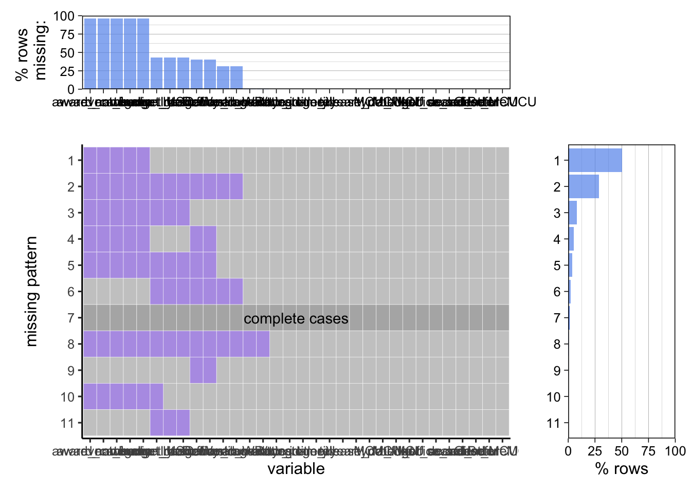

Chapter 4 Missing values

As seen in the chart, there is some consistency to the NA values. The first thing to note is that there are no NA values from any of actor_name through type. This means that for every row in the data set, we will always be able to call upon the actor’s name, the movie or TV series title, the year it was released, and whether it was a movie or a TV series. Also, there are no missing values in any of the columns after the awards, outside of a small few in the Average Rating column and the Number of Votes column.
The next key relationship for NA values is in the five award related columns. 96.43% of the rows in each of those five columns have all NA values. However, it can be seen that if a row has an NA value in one of the five, it necessarily has an NA value in the other four as well. This is due to how we transformed the data. We only included a value for the movies and TV shows that were nominated for the selected awards we chose to include. If they were not nominated, then all five columns will have an NA. If they were, then all five columns will have data explaining the award name, award category, event name, whether the nominee won, and the year of the award. It is nice that there are no instances where awards are listed for some award columns but not others, so that any analysis involving awards can be complete.
Finally, we have to look into the columns including budget and box office data. There are various amounts of missing data from these columns, ranging from 31% missing to 43% missing. It looks like there may be some correlation by row for some of these missing values, so we take a slightly closer look at the data to see if we can find it.


Filtering the data for only including rows that contain a movie vs only including rows that contain a TV Series makes the connection very clear. It can be seen that every single TV Series (bottom) is missing a budget value, and just about every TV Series is missing Box Office numbers. So now, when looking at Box Office success and budget values, we know that TV Series won’t have any information in that area. We can also see that there are now far fewer, albeit still some, NA values in the budget and box office columns for the movie data (top). To avoid having these NAs cause complications in our analyses of these values, we decided to not include those rows in any calculations that involved numerical operations, such as finding the mean of box office success for a particular actor’s filmography.

In this plot illustrating the aggregated missing patterns, we can see that the most common missing pattern is just to have all four award columns be missing. This pattern represents the most common type of row in our data set, which is movies that did not get nominated for any award. This pattern accounts for over 50% of the data. The next most common pattern is again missing those four award columns, but also missing the box office and budget values. Accounting for about a quarter of the data, these rows most typically refer to TV shows and some smaller movies. The only other really significant pattern is that which is missing the four award columns, but also just missing the budget data. This pattern is seen in just under 10% of the data, and highlights rows where there is box office data, but no information on the budget. Beyond that, any other patterns are very infrequent. Complete cases, rows that have no missing values at all, only make up about 2% of the total number of rows, but this is to be expected when so many of the rows have NAs in the awards columns.